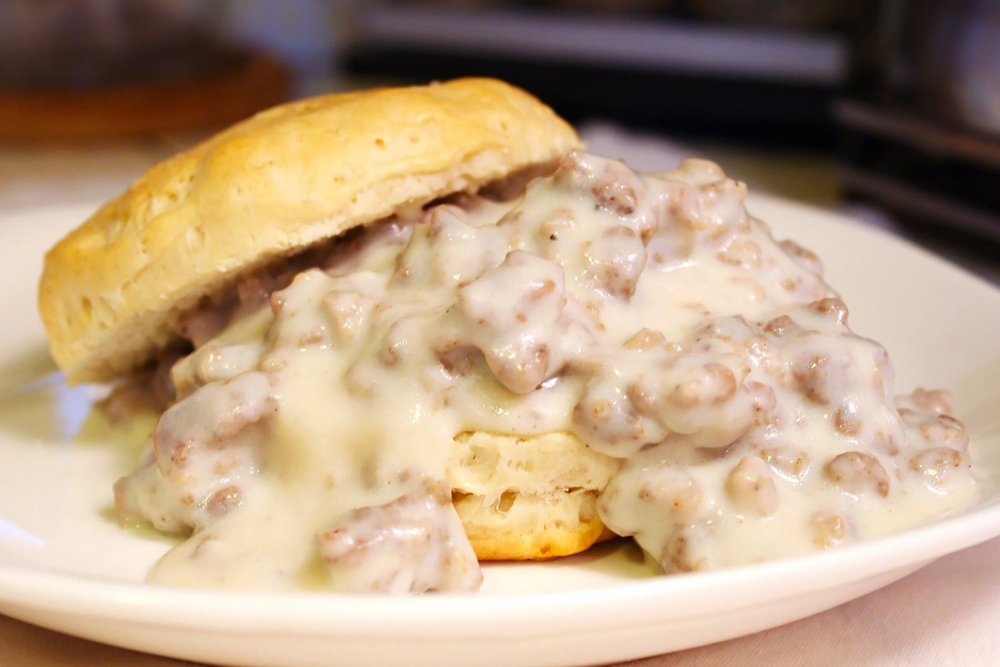

Biscuits & Gravy Recipe

The ultimate breakfast dish to satisy your inner southener
- Canned biscuits
- 1lb of Breakfast Sausage
- Milk
- Flour
- Salt & Pepper
- Preheat oven to 350deg, add Biscuits following provided instructions
- Cook breakfast sausage until browned
- Add flour and then milk, simmer until thickened stirring occasionally
- Season to taste with S&P
- Pour gravy over biscuits